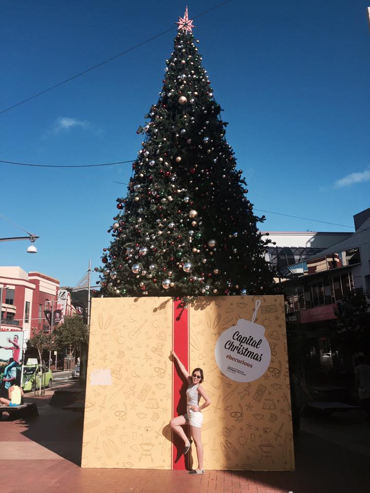

Hi, there! I'm a Korean web designer and developer who lives in New Zealand and love it!
I'm a student who is studying web design and development at Yoobee Design School in Wellington. I finished icreate course last year and taking a web development course in this year.
I have a bachelor degree of Chinese and Chinese literature in Konkuk University. I loves to learn another language, travel, be into another culture and that made her to come to New Zealand which is really far from Korea. And now I am falling in love with New Zealand and wants to find a job in here as a web designer and developer.
Click here to see my CV